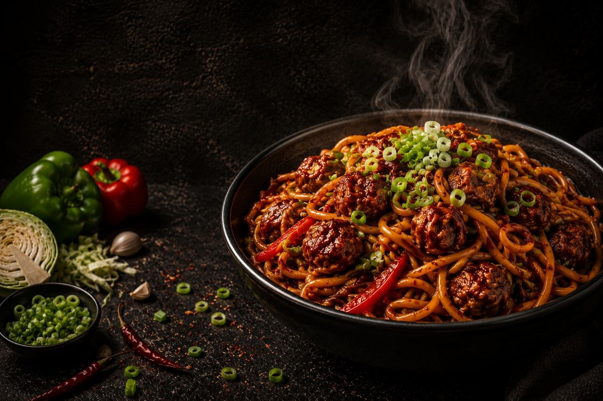

Stir-fried noodles tossed with crispy Veg Manchurian and flavorful Indo-Chinese sauces.
410 kcal
Easy
15 mins
15 mins
Boil the Hakka noodles until just cooked. Drain, rinse with cold water, and toss with a little oil.
Heat oil in a wok, sauté the garlic, then stir-fry cabbage, carrots, capsicum, and spring onions over high heat.
Mix in soy sauce, Manchurian sauce, chili sauce, black pepper, and salt. Stir well until the vegetables are evenly coated.
Add the cooked noodles and toss gently until they are well coated with the sauces.
Gently add the Veg Manchurian balls and mix carefully to avoid breaking them.
Garnish with chopped spring onions and serve hot with extra Manchurian sauce if desired.
Enjoy with chilled lemonade, iced tea, cola or a refreshing fruit juice.


Try delicious recipes only on Flavora.